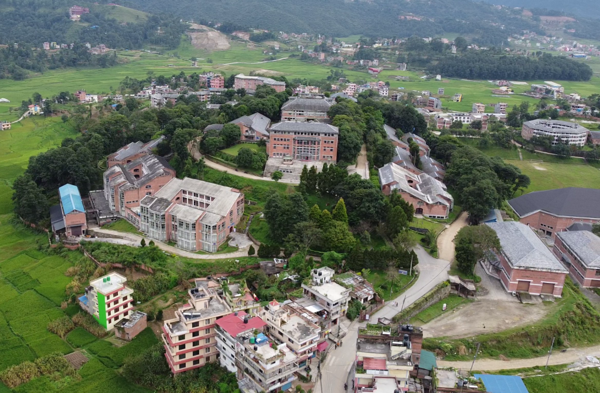
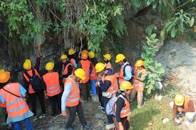
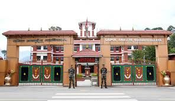

Education History
A four-year programme covering Geodesy, Photogrammetry, Remote Sensing, GIS, Land Administration, Spatial Database Management, and WebGIS development. Conducting regular field surveys, thematic map production, and spatial analysis projects. Currently in the 7th semester with strong focus on GIS application and web mapping.

Replace withku-campus.jpg

Replace withku-fieldwork.jpg
Completed the NEB Higher Secondary Certificate in the Science stream with Physics, Chemistry, Mathematics, and Computer Science. Sainik Awasiya’s structured residential environment built discipline, teamwork, and strong foundations in analytical thinking that continue to shape my academic approach.

Replace with school-sainik.jpg(Your school / class photo)
Completed the NEB Secondary Education Examination from Sainik Awasiya Mahavidyalaya, Sallaghari, Bhaktapur, building a strong foundation in science and mathematics that paved the way for engineering studies.
(Your school / class photo)